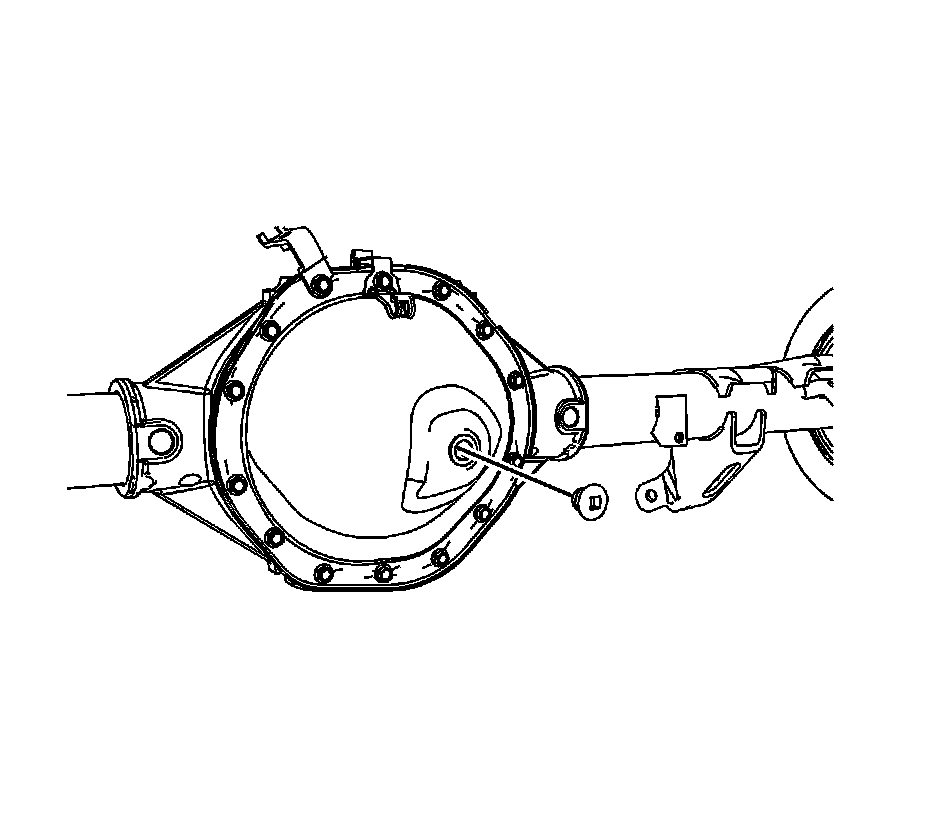

Rear Axle Lubricant Replacement (9.5 Inch LD Axle)
Rear Axle Lubricant Replacement (9.5 Inch LD Axle)
Removal Procedure

1. Raise the vehicle. Refer to Lifting and Jacking the Vehicle.
2. Remove the drain plug.

3. Remove the fill plug.
Installation Procedure
Notice: Refer to Fastener Notice.
1. Install the drain plug.
Tighten the drain plug to 33 N.m (24 lb ft).
2. Fill the rear drive axle.
^ Use the proper fluid, refer to Approximate Fluid Capacities.
^ For the proper capacity, refer to Fluid and Lubricant Recommendations.
3. Install the fill plug.
Tighten the fill plug to 33 N.m (24 lb ft).
4. Lower the vehicle.